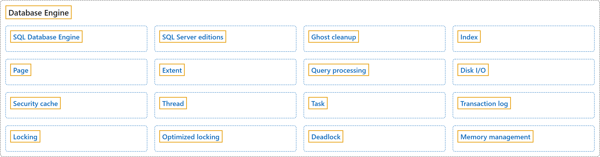

1. Database Engine
Classification

Glossary
| Term | Definition | 中文翻译 | Source |
|---|---|---|---|
| SQL Database Engine SQL 数据库引擎 |
"The Microsoft SQL Database Engine is the core service for storing, processing, and securing data." | Microsoft SQL 数据库引擎是存储、处理和保护数据的核心服务。 | Microsoft, 2026e, para. 1 |
| SQL Server editions SQL Server 版本 |
(context) "The different editions of SQL Server accommodate the unique performance, runtime, and price requirements of organizations and individuals." | （语境）SQL Server 的不同版本适应组织和个人在性能、运行时和价格方面的不同需求。 | Microsoft, 2025b, para. 4 |
| Ghost cleanup 幽灵清理 |
"Ghost cleanup is a background process that physically removes the rows that were marked for deletion by DML statements." | 幽灵清理是一个后台进程，用于物理删除被 DML 语句标记为删除的行。 | Microsoft, 2025c, para. 1 |
| Index 索引 |
"An index is an on-disk or in-memory structure associated with a table or view that speeds retrieval of rows from the table or view." | 索引是与表或视图关联的磁盘上或内存中的结构，可以加快从表或视图中检索行的速度。 | Microsoft, 2026a, "Index basics" section, para. 3 |
| Page 页 |
"A page is a fundamental unit of data storage in the Database Engine." | 页是数据库引擎中数据存储的基本单位。 | Microsoft, 2025e, para. 2 |
| Extent 区 |
"An extent is a collection of eight physically contiguous pages, used to manage pages efficiently." | 区是由八个物理上连续的页组成的集合，用于高效管理页。 | Microsoft, 2025e, para. 3 |
| Query processing 查询处理 |
(context) "The SQL Server Database Engine processes queries on various data storage architectures such as local tables, partitioned tables, and tables distributed across multiple servers." | （语境）SQL Server 数据库引擎在各种数据存储架构（如本地表、分区表和分布在多台服务器上的表）上处理查询。 | Microsoft, 2026c, para. 1 |
| Disk I/O 磁盘 I/O |
(context) "The primary purpose of a SQL Server database is to store and retrieve data, so intensive disk input/output (I/O) is a core characteristic of the Database Engine." | （语境）SQL Server 数据库的主要用途是存储和检索数据，因此密集的磁盘输入/输出（I/O）是数据库引擎的核心特征。 | Microsoft, 2026d, para. 1 |
| Security cache 安全缓存 |
"The security cache stores permissions for a user or a login for various securable objects in a database or server." | 安全缓存为数据库或服务器中的各种可保护对象存储用户或登录名的权限。 | Microsoft, 2025g, "Security cache definition" section, para. 1 |
| Thread 线程 |
"Threads are the smallest units of processing that are executed by an operating system, and allow the application logic to be separated into several concurrent execution paths." | 线程是操作系统执行的最小处理单元，使应用程序逻辑可以拆分为多个并发执行路径。 | Microsoft, 2025h, "Operating system task scheduling" section, para. 1 |
| Task 任务 |
"A task represents the unit of work that needs to be completed to fulfill the request." | 任务表示为完成请求而需要完成的工作单元。 | Microsoft, 2025h, "Tasks" section, para. 1 |
| Transaction log 事务日志 |
"Every SQL Server database has a transaction log that records all transactions and the database modifications that are made by each transaction." | 每个 SQL Server 数据库都有一个事务日志，用于记录所有事务以及每个事务所做的数据库修改。 | Microsoft, 2025f, para. 1 |
| Locking 锁定 |
"Locking is a mechanism used by the Database Engine to synchronize access by multiple users to the same piece of data at the same time." | 锁定是数据库引擎使用的一种机制，用于同步多个用户对同一数据的同时访问。 | Microsoft, 2026f, "Locking in the Database Engine" section, para. 1 |
| Optimized locking 优化锁定 |
"Optimized locking offers an improved transaction locking mechanism to reduce lock blocking and lock memory consumption for concurrent transactions." | 优化锁定提供了改进的事务锁定机制，可减少并发事务的锁阻塞和锁内存消耗。 | Microsoft, 2026b, para. 1 |
| Deadlock 死锁 |
"A deadlock occurs when two or more tasks permanently block each other by each task having a lock on a resource that the other tasks are trying to lock." | 当两个或多个任务相互永久阻塞时就会发生死锁，即每个任务都持有另一些任务正试图锁定的资源上的锁。 | Microsoft, 2025a, "Understand deadlocks" section, para. 1 |
| Memory management 内存管理 |
(context) "SQL Server dynamically acquires and frees memory as required." | （语境）SQL Server 会根据需要动态获取和释放内存。 | Microsoft, 2025d, "SQL Server memory architecture" section, para. 1 |
References
- Microsoft. (2025a, October 9). Deadlocks guide. Microsoft Learn. https://learn.microsoft.com/en-us/sql/relational-databases/sql-server-deadlocks-guide
- Microsoft. (2025b, November 19). Editions and supported features of SQL Server 2025. Microsoft Learn. https://learn.microsoft.com/en-us/sql/sql-server/editions-and-components-of-sql-server-2025
- Microsoft. (2025c, December 8). Ghost cleanup process guide. Microsoft Learn. https://learn.microsoft.com/en-us/sql/relational-databases/ghost-row-cleanup-process-guide
- Microsoft. (2025d, December 29). Memory management architecture guide. Microsoft Learn. https://learn.microsoft.com/en-us/sql/relational-databases/memory-management-architecture-guide
- Microsoft. (2025e, December 29). Page and extent architecture guide. Microsoft Learn. https://learn.microsoft.com/en-us/sql/relational-databases/pages-and-extents-architecture-guide
- Microsoft. (2025f, August 28). SQL Server transaction log architecture and management guide. Microsoft Learn. https://learn.microsoft.com/en-us/sql/relational-databases/sql-server-transaction-log-architecture-and-management-guide
- Microsoft. (2025g, April 29). Security cache concepts. Microsoft Learn. https://learn.microsoft.com/en-us/sql/relational-databases/security-cache
- Microsoft. (2025h, June 3). Thread and task architecture guide. Microsoft Learn. https://learn.microsoft.com/en-us/sql/relational-databases/thread-and-task-architecture-guide
- Microsoft. (2026a, September 14). Index architecture and design guide. Microsoft Learn. https://learn.microsoft.com/en-us/sql/relational-databases/sql-server-index-design-guide
- Microsoft. (2026b, October 20). Optimized locking. Microsoft Learn. https://learn.microsoft.com/en-us/sql/relational-databases/performance/optimized-locking
- Microsoft. (2026c, October 3). Query processing architecture guide. Microsoft Learn. https://learn.microsoft.com/en-us/sql/relational-databases/query-processing-architecture-guide
- Microsoft. (2026d, April 29). SQL Server I/O fundamentals. Microsoft Learn. https://learn.microsoft.com/en-us/sql/relational-databases/sql-server-storage-guide
- Microsoft. (2026e, March 10). The Microsoft SQL Database Engine. Microsoft Learn. https://learn.microsoft.com/en-us/sql/database-engine/sql-database-engine
- Microsoft. (2026f, April 22). Transaction locking and row versioning guide. Microsoft Learn. https://learn.microsoft.com/en-us/sql/relational-databases/sql-server-transaction-locking-and-row-versioning-guide